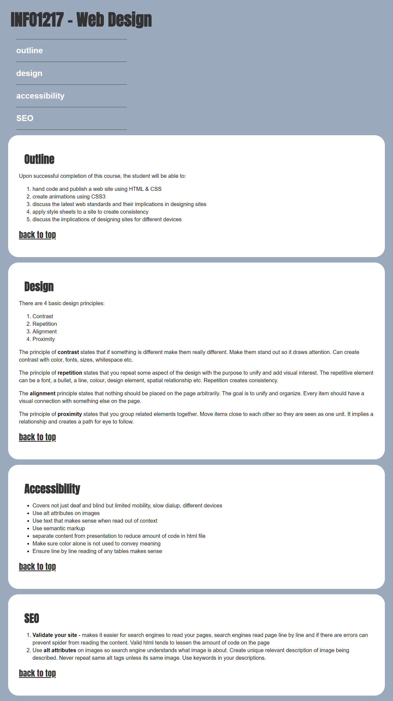
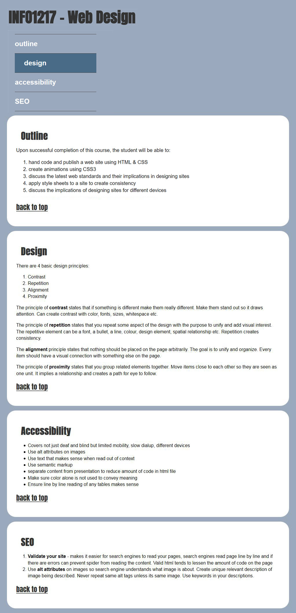

The final lab consists of 4 parts:
1. using a google font for the h1 and h2
2. finishing the navigation links
3. creating the navigation with transition on the hover
4. researching 5 SEO tips and including them in the page
The lab is out of 10 marks
1 mark for implementing the h1 and h2 font
1 mark for the nav links working
3 marks for the navigation styling, hover and transition
5 marks for 5 SEO tips.
Details:
For the navigation, feel free to be creative and use your own colors and fonts etc. If you wish to duplicate the navigation below I used the following:
SEO (search engine optimization) Tips:
What are some things a web designer could do when designing and developing a site to improve organic (free) search engine rankings. Research and come up with a list of ideas you could use. I have provided a couple and we have discussed some in class throughout the semester. Add your list of ideas to the seo section of the page. Include a link to your sources if necessary. Please make sure your ideas are in your own words and not copied and pasted from other websites. You should have five suggestions of your own for a total of seven. We will discuss SEO in our next class.
Upload your zipped site to the lab4 dropbox by: Thursday August 1st by 11:59pm.

screenshot of the hover
